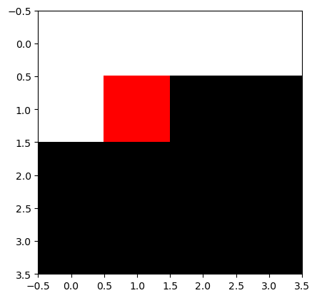
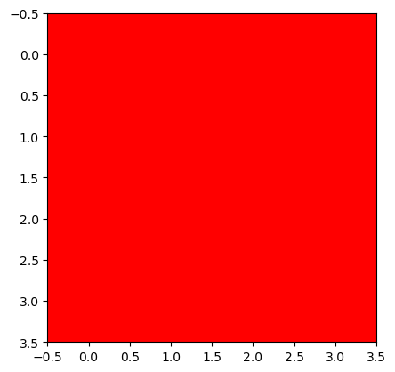
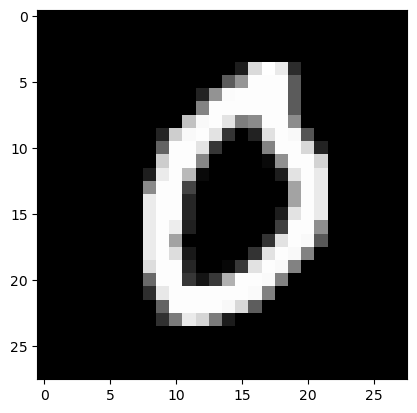
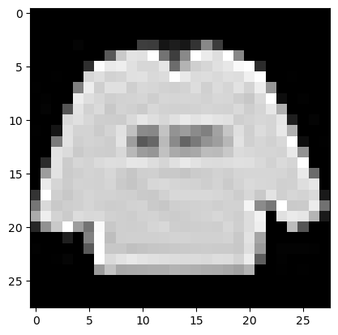
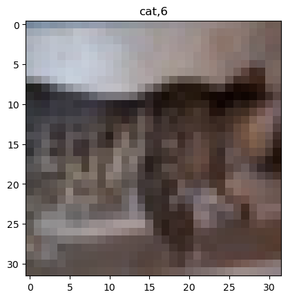

import torch
import torchvision
import matplotlib.pyplot as plt
import pandas as pd
from fastai.data.all import *
from fastai.vision.all import *
import fastaiDeep Learning 3
1. Imports
2. torch.einsum
A. transpose
tsr = torch.arange(12).reshape(4,3)
tsrtensor([[ 0, 1, 2],
[ 3, 4, 5],
[ 6, 7, 8],
[ 9, 10, 11]])- 1번 방법
tsr.t()tensor([[ 0, 3, 6, 9],
[ 1, 4, 7, 10],
[ 2, 5, 8, 11]])- 2번 방법
torch.einsum('ij -> ji' ,tsr)tensor([[ 0, 3, 6, 9],
[ 1, 4, 7, 10],
[ 2, 5, 8, 11]])1번이 더 쉬운데..? 왜 2번처럼 해야할까?
B. 행렬곱
tsr1 = torch.arange(12).reshape(4,3).float()
tsr2 = torch.arange(15).reshape(3,5).float()tsr1 @ tsr2tensor([[ 25., 28., 31., 34., 37.],
[ 70., 82., 94., 106., 118.],
[115., 136., 157., 178., 199.],
[160., 190., 220., 250., 280.]])torch.einsum('ij,jk -> ik' ,tsr1,tsr2)tensor([[ 25., 28., 31., 34., 37.],
[ 70., 82., 94., 106., 118.],
[115., 136., 157., 178., 199.],
[160., 190., 220., 250., 280.]])Matrix의 차원만 잘 지정하고 데이터를 적는다면 쉽게 행렬곱을 수행해준다.
C. 이미지 변환
r = torch.zeros(16).reshape(4,4) + 1.0
g = torch.zeros(16).reshape(4,4)
b = torch.zeros(16).reshape(4,4)
img_plt = torch.stack([r,g,b],axis=-1) # matplotlib 를 쓰기 위해서는 이미지가 이렇게 저장되어있어야한다.
img_torch = torch.stack([r,g,b],axis=0).reshape(1,3,4,4) # torch를 쓰기 위해서는 이미지가 이렇게 저장되어있어야한다. # 잘못된코드
plt.imshow(img_torch.reshape(4,4,3))
# 올바른코드
plt.imshow(torch.einsum('ocij -> ijc',img_torch))
원하는 건 빨간 배경인데 행렬곱을 위처럼 수행하면 프레임이 깨진다.
3. MNIST-직접설계
path = untar_data(URLs.MNIST)
path.ls()(#2) [Path('/root/.fastai/data/mnist_png/training'),Path('/root/.fastai/data/mnist_png/testing')]X0 = torch.stack([torchvision.io.read_image(str(fname)) for fname in list(Path('/root/.fastai/data/mnist_png/training/0').ls())])
X1 = torch.stack([torchvision.io.read_image(str(fname)) for fname in list(Path('/root/.fastai/data/mnist_png/training/1').ls())])
X2 = torch.stack([torchvision.io.read_image(str(fname)) for fname in list(Path('/root/.fastai/data/mnist_png/training/2').ls())])
X = torch.concat([X0,X1,X2],axis=0)/255
y = torch.nn.functional.one_hot(torch.tensor([0]*len(X0) + [1]*len(X1) + [2]*len(X2))).float()
XX0 = torch.stack([torchvision.io.read_image(str(fname)) for fname in list(Path('/root/.fastai/data/mnist_png/testing/0').ls())])
XX1 = torch.stack([torchvision.io.read_image(str(fname)) for fname in list(Path('/root/.fastai/data/mnist_png/testing/1').ls())])
XX2 = torch.stack([torchvision.io.read_image(str(fname)) for fname in list(Path('/root/.fastai/data/mnist_png/testing/2').ls())])
XX = torch.concat([XX0,XX1,XX2],axis=0)/255
yy = torch.nn.functional.one_hot(torch.tensor([0]*len(XX0) + [1]*len(XX1) + [2]*len(XX2))).float()print(X.shape)
print(y.shape)
print(XX.shape)
print(yy.shape)torch.Size([18623, 1, 28, 28])
torch.Size([18623, 3])
torch.Size([3147, 1, 28, 28])
torch.Size([3147, 3])plt.imshow(torch.einsum('cij -> ijc',X[0]),cmap='grey')
(n,n,3)으로 차원이 설정되어 있어야 imshow를 할 수 있다.
(n,n,1)이면 흑백 3이면 컬러이다.
A. y:(n,3) - float형
ds = torch.utils.data.TensorDataset(X,y)
dl = torch.utils.data.DataLoader(ds,batch_size=128)
net1 = torch.nn.Sequential(
torch.nn.Conv2d(1,16,(5,5)),
torch.nn.ReLU(),
torch.nn.MaxPool2d((2,2)),
torch.nn.Flatten()
)
net2 = torch.nn.Sequential(
torch.nn.Linear(2304,3)
)
net = torch.nn.Sequential(
net1,
net2
)
loss_fn = torch.nn.CrossEntropyLoss()
optimizr = torch.optim.Adam(net.parameters())
net.to('cuda:0')
for epoc in range(10):
for xi,yi in dl:
loss = loss_fn(net(xi.to('cuda:0')),yi.to('cuda:0'))
loss.backward()
optimizr.step()
optimizr.zero_grad()
net.to('cpu')
print(f'train : {(net(X).data.argmax(axis=1) == y.argmax(axis=1)).float().mean():.4f}')
print(f'val : {(net(XX).data.argmax(axis=1) == yy.argmax(axis=1)).float().mean():.4f}')train : 0.9812
val : 0.9873- 항상 하던 것.
B. y:(n,) - int형
X0 = torch.stack([torchvision.io.read_image(str(fname)) for fname in list(Path('/root/.fastai/data/mnist_png/training/0').ls())])
X1 = torch.stack([torchvision.io.read_image(str(fname)) for fname in list(Path('/root/.fastai/data/mnist_png/training/1').ls())])
X2 = torch.stack([torchvision.io.read_image(str(fname)) for fname in list(Path('/root/.fastai/data/mnist_png/training/2').ls())])
X = torch.concat([X0,X1,X2],axis=0)/255
y = torch.nn.functional.one_hot(torch.tensor([0]*len(X0) + [1]*len(X1) + [2]*len(X2))).float()
XX0 = torch.stack([torchvision.io.read_image(str(fname)) for fname in list(Path('/root/.fastai/data/mnist_png/testing/0').ls())])
XX1 = torch.stack([torchvision.io.read_image(str(fname)) for fname in list(Path('/root/.fastai/data/mnist_png/testing/1').ls())])
XX2 = torch.stack([torchvision.io.read_image(str(fname)) for fname in list(Path('/root/.fastai/data/mnist_png/testing/2').ls())])
XX = torch.concat([XX0,XX1,XX2],axis=0)/255
yy = torch.nn.functional.one_hot(torch.tensor([0]*len(XX0) + [1]*len(XX1) + [2]*len(XX2))).float()y = y.argmax(axis=-1)
yy = yy.argmax(axis=-1)y와 yy를 int형으로 바꿔야하기에 argmax함수를 이용했다.
print(X.shape)
print(y.shape)
print(XX.shape)
print(yy.shape)torch.Size([60000, 1, 28, 28])
torch.Size([60000])
torch.Size([10000, 1, 28, 28])
torch.Size([10000])ds = torch.utils.data.TensorDataset(X,y)
dl = torch.utils.data.DataLoader(ds,batch_size=128)
net1 = torch.nn.Sequential(
torch.nn.Conv2d(1,16,(5,5)),
torch.nn.ReLU(),
torch.nn.MaxPool2d((2,2)),
torch.nn.Flatten()
)
net2 = torch.nn.Sequential(
torch.nn.Linear(2304,3)
)
net = torch.nn.Sequential(
net1,
net2
)
loss_fn = torch.nn.CrossEntropyLoss()
optimizr = torch.optim.Adam(net.parameters())
net.to('cuda:0')
for epoc in range(10):
for xi,yi in dl:
# netout = net(xi.to('cuda:0'))
loss = loss_fn(net(xi.to('cuda:0')),yi.to('cuda:0'))
loss.backward()
optimizr.step()
optimizr.zero_grad()
net.to("cpu")
print(f'train : {(net(X).data.argmax(axis=1) == y).float().mean():.4f}')
print(f'val : {(net(XX).data.argmax(axis=1) == yy).float().mean():.4f}')train : 0.9767
val : 0.9854- 손실함수로 torch.nn.CrossEntropyLoss()를 사용하면 one_hot_encoding , float형 전처리 모두 필요없다 알아서 다 해줌
- 받아야하는 class가 1보다 크면 CrossEntropyLoss()를 사용
4. Fashion-MNIST
df_train=pd.read_csv('https://media.githubusercontent.com/media/guebin/PP2023/main/posts/fashion-mnist_train.csv')
df_test=pd.read_csv('https://media.githubusercontent.com/media/guebin/PP2023/main/posts/fashion-mnist_test.csv')
def rshp(row):
return row.reshape(1,28,28)
X = torch.tensor(np.apply_along_axis(rshp,axis=1,arr=np.array(df_train.iloc[:,1:]))).float()
XX = torch.tensor(np.apply_along_axis(rshp,axis=1,arr=np.array(df_test.iloc[:,1:]))).float()
y = torch.tensor(np.array(df_train.label))
yy = torch.tensor(np.array(df_test.label))print(X.shape,'\t',X.dtype)
print(y.shape,'\t\t\t',y.dtype)
print(XX.shape,'\t',XX.dtype)
print(yy.shape,'\t\t\t',yy.dtype)torch.Size([60000, 1, 28, 28]) torch.float32
torch.Size([60000]) torch.int64
torch.Size([10000, 1, 28, 28]) torch.float32
torch.Size([10000]) torch.int64plt.imshow(torch.einsum('cij -> ijc',X[0]),cmap="gray")
A. torch
ds = torch.utils.data.TensorDataset(X,y)
dl = torch.utils.data.DataLoader(ds,batch_size=128)
net1 = torch.nn.Sequential(
torch.nn.Conv2d(1,16,(5,5)),
torch.nn.ReLU(),
torch.nn.MaxPool2d((2,2)),
torch.nn.Flatten()
)
net2 = torch.nn.Sequential(
torch.nn.Linear(2304,10)
)
net = torch.nn.Sequential(
net1,
net2
)
loss_fn = torch.nn.CrossEntropyLoss()
optimizr = torch.optim.Adam(net.parameters())
net.to('cuda:0')
for epoc in range(10):
for xi,yi in dl:
netout = net(xi.to('cuda:0'))
loss = loss_fn(netout,yi.to('cuda:0'))
loss.backward()
optimizr.step()
optimizr.zero_grad()
net.to('cpu')
print(f'train: {(net(X).data.argmax(axis=1) == y).float().mean():.4f}')
print(f'val: {(net(XX).data.argmax(axis=1) == yy).float().mean():.4f}')train: 0.9089
val: 0.8701- 항상 하던 것
- 받아야하는 class가 10개니까 torch.nn.CrossEntropyLoss() 사용하고 어자피 float형 안 맞춰도 되니까 y를 int형으로 설정
B. fastai
# Step1: 데이터정리 (dls생성)
ds1 = torch.utils.data.TensorDataset(X,y)
ds2 = torch.utils.data.TensorDataset(XX,yy)
dl1 = torch.utils.data.DataLoader(ds1,batch_size=128)
dl2 = torch.utils.data.DataLoader(ds2,batch_size=128)
dls = fastai.data.core.DataLoaders(dl1,dl2)
# Step2: 적합에 필요한 오브젝트 생성
net1 = torch.nn.Sequential(
torch.nn.Conv2d(1,16,(5,5)),
torch.nn.ReLU(),
torch.nn.MaxPool2d((2,2)),
torch.nn.Flatten()
)
net2 = torch.nn.Sequential(
torch.nn.Linear(2304,10),
)
net = torch.nn.Sequential(
net1, # 2d-part
net2, # 1d-part
)
loss_fn = torch.nn.CrossEntropyLoss()
# optimizr = torch.optim.Adam(net.parameters())
# Step3: 적합
lrnr = fastai.learner.Learner(
dls=dls,
model = net,
loss_func = loss_fn,
metrics = [fastai.metrics.accuracy]
)
lrnr.fit(10)
# Step4: 예측 및 평가
lrnr.model.to('cpu')
print(f'train: {(net(X).data.argmax(axis=1) == y).float().mean():.4f}')
print(f'val: {(net(XX).data.argmax(axis=1) == yy).float().mean():.4f}')| epoch | train_loss | valid_loss | accuracy | time |
|---|---|---|---|---|
| 0 | 0.541958 | 0.464602 | 0.851200 | 00:01 |
| 1 | 0.402498 | 0.436741 | 0.859500 | 00:01 |
| 2 | 0.353617 | 0.427963 | 0.865000 | 00:01 |
| 3 | 0.319062 | 0.429699 | 0.869100 | 00:01 |
| 4 | 0.297310 | 0.442318 | 0.869700 | 00:01 |
| 5 | 0.284193 | 0.457588 | 0.870200 | 00:01 |
| 6 | 0.275215 | 0.462712 | 0.873100 | 00:01 |
| 7 | 0.264285 | 0.461538 | 0.872100 | 00:01 |
| 8 | 0.260774 | 0.467244 | 0.874800 | 00:01 |
| 9 | 0.253124 | 0.481810 | 0.874100 | 00:01 |
train: 0.9161
val: 0.8741- 조금 새롭게 fastai 이용
optimizr 사용 안 해도 된다. lrnr 새롭게 정의해서 손실함수 넣어주고 원하는 적합기준 정해주면 된다.
for epoc 귀찮게 길게 쓸 필요 없이 fit하면 바로 학습
lrnr 사용하면 to.(‘cuda:0’) 사용 할 필요없이 바로 GPU로 연산해준다.
5. CIFAR10 – transfer
A. 데이터 불러오기 및 전처리
path = fastai.data.external.untar_data(fastai.data.external.URLs.CIFAR)
path.ls()(#3) [Path('/root/.fastai/data/cifar10/train'),Path('/root/.fastai/data/cifar10/labels.txt'),Path('/root/.fastai/data/cifar10/test')]labels = [str(l).split('/')[-1] for l in (path/'train').ls()]
labels['deer',
'airplane',
'ship',
'dog',
'automobile',
'truck',
'cat',
'frog',
'horse',
'bird']X = torch.stack([torchvision.io.read_image(str(fname)) for l in labels for fname in (path/f'train/{l}').ls()],axis=0).float()/255
XX = torch.stack([torchvision.io.read_image(str(fname)) for l in labels for fname in (path/f'test/{l}').ls()],axis=0).float()/255
y = torch.tensor([i for i,l in enumerate(labels) for fname in (path/f'train/{l}').ls()])
yy = torch.tensor([i for i,l in enumerate(labels) for fname in (path/f'test/{l}').ls()])print(X.shape,'\t',X.dtype)
print(y.shape,'\t\t\t',y.dtype)
print(XX.shape,'\t',XX.dtype)
print(yy.shape,'\t\t\t',yy.dtype)torch.Size([50000, 3, 32, 32]) torch.float32
torch.Size([50000]) torch.int64
torch.Size([10000, 3, 32, 32]) torch.float32
torch.Size([10000]) torch.int64ylabel = [l for l in labels for fname in (path/f'train/{l}').ls()]
i = 30002
plt.imshow(torch.einsum('cij->ijc',X[i]))
plt.title(f'{ylabel[i]},{y[i]}')Text(0.5, 1.0, 'cat,6')
- 쓰읍…뭐지? 어렵겠는데?
ds1 = torch.utils.data.TensorDataset(X,y)
ds2 = torch.utils.data.TensorDataset(XX,yy)
dl1 = torch.utils.data.DataLoader(ds1,batch_size=256,shuffle=True)
dl2 = torch.utils.data.DataLoader(ds2,batch_size=100)
dls = fastai.data.core.DataLoaders(dl1,dl2)B. 수제네트워크로 학습
# Step1:
ds1 = torch.utils.data.TensorDataset(X,y)
ds2 = torch.utils.data.TensorDataset(XX,yy)
dl1 = torch.utils.data.DataLoader(ds1,batch_size=256)
dl2 = torch.utils.data.DataLoader(ds2,batch_size=100)
dls = fastai.data.core.DataLoaders(dl1,dl2)
# Step2:
net1 = torch.nn.Sequential(
torch.nn.Conv2d(3,16,(5,5)),
torch.nn.ReLU(),
torch.nn.MaxPool2d((2,2)),
torch.nn.Flatten()
)
net2 = torch.nn.Sequential(
torch.nn.Linear(3136,10),
)
net = torch.nn.Sequential(
net1, # 2d-part
net2, # 1d-part
)
loss_fn = torch.nn.CrossEntropyLoss()
lrnr = fastai.learner.Learner(
dls=dls,
model=net,
loss_func=loss_fn,
#--#
metrics=[fastai.metrics.accuracy]
)
# Step3:
lrnr.fit(10)
# Step4:
lrnr.model.to("cpu")
print(f'train: {(lrnr.model(X).data.argmax(axis=1) == y).float().mean():.4f}')
print(f'val: {(lrnr.model(XX).data.argmax(axis=1) == yy).float().mean():.4f}')| epoch | train_loss | valid_loss | accuracy | time |
|---|---|---|---|---|
| 0 | 2.433561 | 2.301266 | 0.111900 | 00:00 |
| 1 | 2.410473 | 2.299356 | 0.111600 | 00:00 |
| 2 | 2.479004 | 2.294760 | 0.129800 | 00:00 |
| 3 | 2.709449 | 2.291229 | 0.132000 | 00:01 |
| 4 | 2.522834 | 2.285669 | 0.141500 | 00:00 |
| 5 | 2.564267 | 2.291603 | 0.152500 | 00:00 |
| 6 | 2.335277 | 22.824865 | 0.100000 | 00:00 |
| 7 | 2.451625 | 2.266450 | 0.154900 | 00:00 |
| 8 | 2.779048 | 2.276835 | 0.134400 | 00:00 |
| 9 | 2.322695 | 15.980297 | 0.100000 | 00:01 |
train: 0.1000
val: 0.1000- 적합결과가… 너무….낮은데?
- shuffle 해보자
# Step1:
ds1 = torch.utils.data.TensorDataset(X,y)
ds2 = torch.utils.data.TensorDataset(XX,yy)
dl1 = torch.utils.data.DataLoader(ds1,batch_size=256,shuffle=True)
dl2 = torch.utils.data.DataLoader(ds2,batch_size=100)
dls = fastai.data.core.DataLoaders(dl1,dl2)
# Step2:
net1 = torch.nn.Sequential(
torch.nn.Conv2d(3,16,(5,5)),
torch.nn.ReLU(),
torch.nn.MaxPool2d((2,2)),
torch.nn.Flatten()
)
net2 = torch.nn.Sequential(
torch.nn.Linear(3136,10),
)
net = torch.nn.Sequential(
net1, # 2d-part
net2, # 1d-part
)
loss_fn = torch.nn.CrossEntropyLoss()
lrnr = fastai.learner.Learner(
dls=dls,
model=net,
loss_func=loss_fn,
#--#
metrics=[fastai.metrics.accuracy]
)
# Step3:
lrnr.fit(10)
# Step4:
lrnr.model.to("cpu")
print(f'train: {(lrnr.model(X).data.argmax(axis=1) == y).float().mean():.4f}')
print(f'val: {(lrnr.model(XX).data.argmax(axis=1) == yy).float().mean():.4f}')| epoch | train_loss | valid_loss | accuracy | time |
|---|---|---|---|---|
| 0 | 1.592431 | 1.526400 | 0.457100 | 00:01 |
| 1 | 1.417399 | 1.401563 | 0.505400 | 00:01 |
| 2 | 1.346312 | 1.337707 | 0.530100 | 00:01 |
| 3 | 1.289108 | 1.314588 | 0.537600 | 00:00 |
| 4 | 1.251300 | 1.248085 | 0.561200 | 00:01 |
| 5 | 1.217364 | 1.244665 | 0.565400 | 00:01 |
| 6 | 1.189324 | 1.224657 | 0.570000 | 00:01 |
| 7 | 1.164597 | 1.191183 | 0.583000 | 00:01 |
| 8 | 1.140757 | 1.186900 | 0.585600 | 00:00 |
| 9 | 1.117297 | 1.169561 | 0.596800 | 00:00 |
train: 0.6298
val: 0.5968- shuffle 하나로 이렇게 상승한다고?
C. TransferLearning
- 남들이 만들어놓은 좋은 model을 가져와서 써보자
net = torchvision.models.resnet18()
netResNet(
(conv1): Conv2d(3, 64, kernel_size=(7, 7), stride=(2, 2), padding=(3, 3), bias=False)
(bn1): BatchNorm2d(64, eps=1e-05, momentum=0.1, affine=True, track_running_stats=True)
(relu): ReLU(inplace=True)
(maxpool): MaxPool2d(kernel_size=3, stride=2, padding=1, dilation=1, ceil_mode=False)
(layer1): Sequential(
(0): BasicBlock(
(conv1): Conv2d(64, 64, kernel_size=(3, 3), stride=(1, 1), padding=(1, 1), bias=False)
(bn1): BatchNorm2d(64, eps=1e-05, momentum=0.1, affine=True, track_running_stats=True)
(relu): ReLU(inplace=True)
(conv2): Conv2d(64, 64, kernel_size=(3, 3), stride=(1, 1), padding=(1, 1), bias=False)
(bn2): BatchNorm2d(64, eps=1e-05, momentum=0.1, affine=True, track_running_stats=True)
)
(1): BasicBlock(
(conv1): Conv2d(64, 64, kernel_size=(3, 3), stride=(1, 1), padding=(1, 1), bias=False)
(bn1): BatchNorm2d(64, eps=1e-05, momentum=0.1, affine=True, track_running_stats=True)
(relu): ReLU(inplace=True)
(conv2): Conv2d(64, 64, kernel_size=(3, 3), stride=(1, 1), padding=(1, 1), bias=False)
(bn2): BatchNorm2d(64, eps=1e-05, momentum=0.1, affine=True, track_running_stats=True)
)
)
(layer2): Sequential(
(0): BasicBlock(
(conv1): Conv2d(64, 128, kernel_size=(3, 3), stride=(2, 2), padding=(1, 1), bias=False)
(bn1): BatchNorm2d(128, eps=1e-05, momentum=0.1, affine=True, track_running_stats=True)
(relu): ReLU(inplace=True)
(conv2): Conv2d(128, 128, kernel_size=(3, 3), stride=(1, 1), padding=(1, 1), bias=False)
(bn2): BatchNorm2d(128, eps=1e-05, momentum=0.1, affine=True, track_running_stats=True)
(downsample): Sequential(
(0): Conv2d(64, 128, kernel_size=(1, 1), stride=(2, 2), bias=False)
(1): BatchNorm2d(128, eps=1e-05, momentum=0.1, affine=True, track_running_stats=True)
)
)
(1): BasicBlock(
(conv1): Conv2d(128, 128, kernel_size=(3, 3), stride=(1, 1), padding=(1, 1), bias=False)
(bn1): BatchNorm2d(128, eps=1e-05, momentum=0.1, affine=True, track_running_stats=True)
(relu): ReLU(inplace=True)
(conv2): Conv2d(128, 128, kernel_size=(3, 3), stride=(1, 1), padding=(1, 1), bias=False)
(bn2): BatchNorm2d(128, eps=1e-05, momentum=0.1, affine=True, track_running_stats=True)
)
)
(layer3): Sequential(
(0): BasicBlock(
(conv1): Conv2d(128, 256, kernel_size=(3, 3), stride=(2, 2), padding=(1, 1), bias=False)
(bn1): BatchNorm2d(256, eps=1e-05, momentum=0.1, affine=True, track_running_stats=True)
(relu): ReLU(inplace=True)
(conv2): Conv2d(256, 256, kernel_size=(3, 3), stride=(1, 1), padding=(1, 1), bias=False)
(bn2): BatchNorm2d(256, eps=1e-05, momentum=0.1, affine=True, track_running_stats=True)
(downsample): Sequential(
(0): Conv2d(128, 256, kernel_size=(1, 1), stride=(2, 2), bias=False)
(1): BatchNorm2d(256, eps=1e-05, momentum=0.1, affine=True, track_running_stats=True)
)
)
(1): BasicBlock(
(conv1): Conv2d(256, 256, kernel_size=(3, 3), stride=(1, 1), padding=(1, 1), bias=False)
(bn1): BatchNorm2d(256, eps=1e-05, momentum=0.1, affine=True, track_running_stats=True)
(relu): ReLU(inplace=True)
(conv2): Conv2d(256, 256, kernel_size=(3, 3), stride=(1, 1), padding=(1, 1), bias=False)
(bn2): BatchNorm2d(256, eps=1e-05, momentum=0.1, affine=True, track_running_stats=True)
)
)
(layer4): Sequential(
(0): BasicBlock(
(conv1): Conv2d(256, 512, kernel_size=(3, 3), stride=(2, 2), padding=(1, 1), bias=False)
(bn1): BatchNorm2d(512, eps=1e-05, momentum=0.1, affine=True, track_running_stats=True)
(relu): ReLU(inplace=True)
(conv2): Conv2d(512, 512, kernel_size=(3, 3), stride=(1, 1), padding=(1, 1), bias=False)
(bn2): BatchNorm2d(512, eps=1e-05, momentum=0.1, affine=True, track_running_stats=True)
(downsample): Sequential(
(0): Conv2d(256, 512, kernel_size=(1, 1), stride=(2, 2), bias=False)
(1): BatchNorm2d(512, eps=1e-05, momentum=0.1, affine=True, track_running_stats=True)
)
)
(1): BasicBlock(
(conv1): Conv2d(512, 512, kernel_size=(3, 3), stride=(1, 1), padding=(1, 1), bias=False)
(bn1): BatchNorm2d(512, eps=1e-05, momentum=0.1, affine=True, track_running_stats=True)
(relu): ReLU(inplace=True)
(conv2): Conv2d(512, 512, kernel_size=(3, 3), stride=(1, 1), padding=(1, 1), bias=False)
(bn2): BatchNorm2d(512, eps=1e-05, momentum=0.1, affine=True, track_running_stats=True)
)
)
(avgpool): AdaptiveAvgPool2d(output_size=(1, 1))
(fc): Linear(in_features=512, out_features=1000, bias=True)
)- 마지막만 바꾸는 건 받아야하는 class의 개수가 원래 net과 다르니 이 부분을 바꿔준다
net.fc = torch.nn.Linear(512,10)# Step1:
ds1 = torch.utils.data.TensorDataset(X,y)
ds2 = torch.utils.data.TensorDataset(XX,yy)
dl1 = torch.utils.data.DataLoader(ds1,batch_size=64,shuffle=True)
dl2 = torch.utils.data.DataLoader(ds2,batch_size=100)
dls = fastai.data.core.DataLoaders(dl1,dl2)
# Step2:
net = torchvision.models.resnet18()
net.fc = torch.nn.Linear(512,10)
loss_fn = torch.nn.CrossEntropyLoss()
lrnr = fastai.learner.Learner(
dls=dls,
model=net,
loss_func=loss_fn,
#--#
metrics=[fastai.metrics.accuracy]
)
# Step3:
lrnr.fit(10)
# Step4:
# 코랩사용시 아래는 주석처리할것 (이유: 코랩의 RAM이 충분하지 않음) valiation set의 accuracy는 fastai결과로 확인할것.
lrnr.model.to("cpu")
print(f'train: {(lrnr.model(X).data.argmax(axis=1) == y).float().mean():.4f}') #
print(f'val: {(lrnr.model(XX).data.argmax(axis=1) == yy).float().mean():.4f}')| epoch | train_loss | valid_loss | accuracy | time |
|---|---|---|---|---|
| 0 | 1.187585 | 1.287988 | 0.556600 | 00:11 |
| 1 | 0.948455 | 0.954595 | 0.673700 | 00:11 |
| 2 | 0.800781 | 1.140621 | 0.629100 | 00:11 |
| 3 | 0.673832 | 0.857950 | 0.709800 | 00:11 |
| 4 | 0.604290 | 1.005834 | 0.677700 | 00:11 |
| 5 | 0.497186 | 0.754922 | 0.747400 | 00:10 |
| 6 | 0.415167 | 0.770542 | 0.756200 | 00:11 |
| 7 | 0.349538 | 0.815337 | 0.758800 | 00:11 |
| 8 | 0.290415 | 1.048183 | 0.722400 | 00:11 |
| 9 | 0.242629 | 0.965163 | 0.742200 | 00:11 |
train: 0.9302
val: 0.7421- 오버피팅이 좀 있지만 꽤 잘 맞춘다
- 결론 : 남들이 쓰는 거 가져다가 살짝 바꿔서 쓰는 게 잘 나오긴 한다…
! 의문점이 하나 생긴다. 과연 AI가 작동하는 방식을 하나하나 뜯어보면서 왜 이렇게 생각했는지 우리가 알 수 있을까?